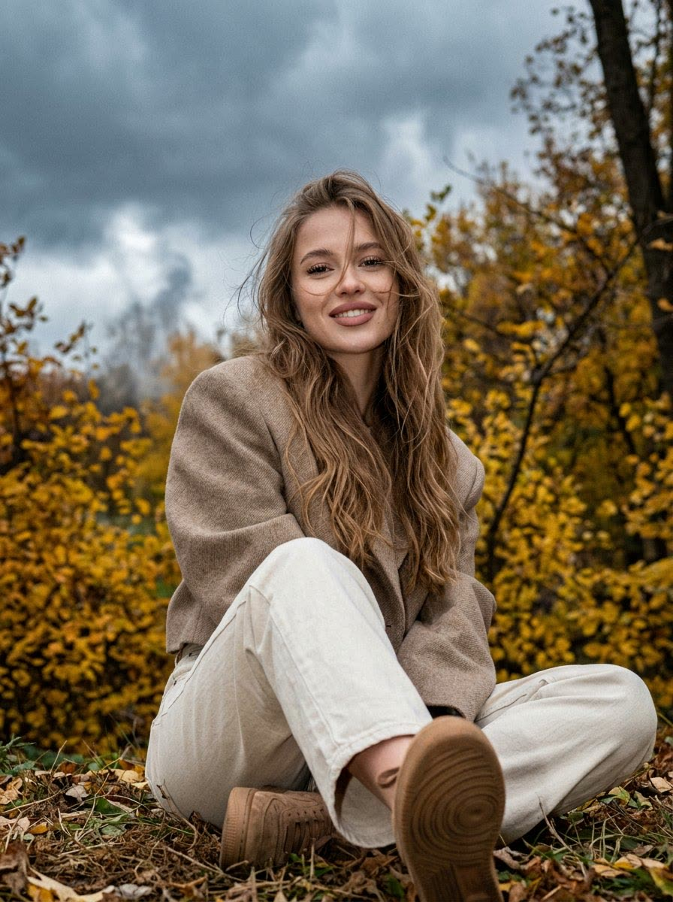

Nano Banana 2 autumn-park fashion portrait finished as a flash snapshot: "Canon G7X, pronounced grain. Photo with flash"
GRN-091Grain / FilterNano Banana 2by @dreamydigiarts2026-11-18

A low-angle seated portrait among yellow foliage (oversized beige-brown wool blazer, white jeans, suede sneakers) that would read as a polished 85mm editorial, until the last line turns it into a compact-camera flash photo with heavy grain under a stormy sky. Useful as a direct comparison of how a closing camera-and-flash line overrides the lens language earlier in the prompt.
Prompt
Photorealistic vertical portrait: the model is sitting among yellow foliage in an autumn park, her torso slightly turned to the side, shoulders relaxed, one leg bent and raised closer to the camera, the other extended to the side, arms hanging freely and hidden by voluminous sleeves, a soft closed-mouth smile, natural pose; head slightly tilted, chin slightly raised, gaze directed straight into the lens; long, waist-length wavy hair styled freely with a messy side part, individual strands slightly blown by the wind and partially falling across the face; clothing: an oversized cropped beige-brown wool blazer with long wide sleeves, paired with loose light-colored white jeans, brown suede sneakers; shot from a low angle at the seated girl’s level, the camera positioned directly in front of her with a slight approach, centered composition, knees and the texture of the clothing occupying the lower part of the frame, softly blurred background; calm gray-blue sky; lighting is diffused, cool, and soft, as on an overcast windy day, slight haze, natural color grading, shallow depth of field, fine film grain, 85 mm lens, cinematic fashion photography with realistic knitwear and wheat texture. Background: dense trees with yellow foliage, natural and uneven. Flawless makeup: expressive eyelashes, nude-pink lips with a darker contour. High detail (visible pores, individual eyebrow hairs and eyelashes), natural skin, even tone, no AI artifacts, realistic lip texture. Stormy sky, heavy clouds, an atmosphere of moisture and rain. Canon G7X, pronounced grain. Photo with flash
Our Seedance 2.5 adaptation
[ADAPTED for Seedance 2.5 by Grok Bot; not the creator's prompt. Follows the official BytePlus Seedance 2.5 prompt guide and its official sd25-pe prompt-optimizer skill: parameters only on the API line (not in the prompt body), subject + action + scene, then visuals, camera (move, subject, start, direction, arrival) and sound; only the source's own exclusions are kept.] API: duration 5, ratio 3:4 (taken from the first frame), resolution 1080p (4k for a final), generate_audio true; first_frame = the GRN-091 still. 【Subject】The woman sitting among yellow foliage as in the first frame: oversized beige-brown wool blazer, white jeans, brown suede sneakers, long wavy hair. 【Action】A gust blows strands across her face; she laughs, pushes the hair back with one sleeve and looks straight into the lens again. 【Camera】Low angle at her seated level, handheld compact-camera feel, a small reframe after the gust. 【Visuals】Stormy gray-blue sky, overcast light lifted by an on-camera flash on her face and knees, pronounced grain, slight haze, natural colour. 【Sound】Wind in the trees, leaves rustling, a short laugh.
Tags: Nano Banana 2, WeryAI, compact camera look, Canon G7X, on-camera flash, pronounced grain, autumn foliage, low angle, stormy sky, image